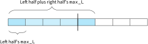

Maximum Subarray
1. Problem statement
Aziz et al. (2018, p. 250) mentions this problem but the explanations are so terse as to render them useless.
Given an array of integers, find the maximum subarray (Bentley, 2000, p. 77).
Input: [-2, 1, -3, 4, -1, 2, 1, -5, 4]
^ ^
| |
| `------.
| |
`-----------. |
| |
v v
Output: 6 (subarray from index 3 to 6)
2. Insights?
While simple to state, this problem can be approached in many ways. See the various solutions below.
3. Solution
We use a common type SubSum (to mean "subarray sum") across our different
implementations to capture the answer.
class SubSum(NamedTuple): sum: int # Beginning and ending indices of the original array. beg: int end: int
3.1. Brute force (cubic)
def brute_cubic(xs: List[int]) -> Optional[SubSum]: max_so_far = None beg = 0 end = 0 if not xs: return None for i in range(0, len(xs)): for j in range(i, len(xs)): subsum = sum(xs[i:j+1]) if (max_so_far is None) or max_so_far < subsum: max_so_far = subsum beg = i end = j # The Python type system is unable to see that this condition is impossible. # So, make it explicit. Otherwise we get an error suggesting that we are # providing an optional type for the "sum" field of SubSum, because Python # thinks that max_so_far can still be None at this point. assert max_so_far is not None return SubSum(max_so_far, beg, end)
Time complexity is \(O(n^3)\) (aka cubic algorithm), because we have 2 for
loops, both that go over the entire range of input, which by themselves make it
\(O(n^2)\). But then in the inner for loop we find the sum (sum(xs[i:j+1])) by
looping over the range, itself a O(n) algorithm.
3.2. Brute force (quadratic)
Instead of computing subsum from scratch on every inner loop iteration, we can
just build it up within the outer for loop.
def brute_quadratic(xs: List[int]) -> Optional[SubSum]: max_so_far = None beg = 0 end = 0 if not xs: return None for i in range(0, len(xs)): subsum = 0 for j in range(i, len(xs)): subsum += xs[j] if (max_so_far is None) or max_so_far < subsum: max_so_far = subsum beg = i end = j assert max_so_far is not None return SubSum(max_so_far, beg, end)
Time complexity is \(O(n^2)\), because we use a nested for loop over all
elements.
3.3. Brute force (quadratic, alternative)
Here we compute cumulative sums, such that csums[i] == sum(xs[0:i]).
xs = [1, 2, 3]
# csums == [1, 3, 6]
csums = [
sum([1]),
sum([1, 2]),
sum([1, 2, 3])
]
Then if we want to compute sum(xs[i:j]), we can just use the csums values.
Going with the example above, if we want to compute the sum of xs[1, 2] (where
i == 0 and j == 2), we can do csum[j] - csum[i - 1] or csum[2] -
csum[0].
def brute_quadratic_alt(xs: List[int]) -> Optional[SubSum]: max_so_far = None beg = 0 end = 0 csums: List[int] = [] if not xs: return None for i in range(0, len(xs)): if csums: csums.append(xs[i] + csums[i - 1]) else: # "Base case" when csums is empty, because csums[0 - 1] or csums[-1] # will run into an IndexError. csums.append(xs[i]) for i in range(0, len(xs)): for j in range(i, len(xs)): if i > 0: subsum = csums[j] - csums[i - 1] else: subsum = csums[j] if (max_so_far is None) or max_so_far < subsum: max_so_far = subsum beg = i end = j assert max_so_far is not None return SubSum(max_so_far, beg, end)
This algorithm is still quadratic, because we still use a nested for loop for
the main computation.
3.4. Divide-and-conquer (\(O(n \log{n})\))
Bentley (2000, p. 80) says that this approach is actually rather complicated, and that there's no harm in skipping it in favor of the optimal algorithm (Kadane's algorithm). We include it here for completeness, because although it's not the fastest algorithm, it does a good job of illustrating the principles of "divide-and-conquer".
Figure 1: Division of array into subarrays a and b.
The maximum subarrays of a and b are each individually somewhere within a
and b.
Figure 2: Maximum subarrays \(M_a\) and \(M_b\) found in a and b, respectively.
You may think that we can choose the greater of \(M_a\) and \(M_b\) and be done with
it. Alas, there is a flaw in this thinking: there could be a subarray that uses
parts of both a and b, whose maximum is greater than either \(M_a\) or \(M_b\).

Figure 3: Maximum subarray \(M_c\) which crosses over into a and b.
In summary, there are two possibilities:
- \(M_a\) or \(M_b\) is the maximum subarray by itself, or
- a separate subarray, \(M_c\), which is composed of parts of subarrays
aandb, is the maximum subarray.
Below are two examples of both cases:
Max subarray is M_a = 6 (larger than M_b = 3).
|-------a------| |--------b---------|
[-1, 1, 2, 3, -1, -2, -1, 1, 1, 1, -1]
|-M_a-| |-M_b-|
Max subarray is M_c = 7 (larger than M_a = 6).
|-------a------| |-------b------|
[-1, 1, 2, 3, -1, -1, 1, 1, 1, -1]
|-M_a-| |-M_b-|
|---------M_c----------|
Max subarray is M_c = 15, but this time its boundaries don't line up with the
boundaries of M_a = 11 or M_b = 5.
|----------a---------| |--------b---------|
[-1, 1, 0, 7, -9, 7, 1, 7, -10, 3, 1, 1, -1]
|-M_a-| |-M_c-| |-M_b-|
Note that \(M_c\) may include \(M_a\) or \(M_b\), but whether this happens depends on the input.
def dac(xs: List[int]) -> Optional[SubSum]: def helper(lo, hi): # Zero elements. For simplicity of comparisons between M_a, M_b, and # M_c, we use a proxy value for None, SubSum(0, -1, -1). if lo > hi: return SubSum(0, -1, -1) # One element. if lo == hi: return SubSum(xs[lo], lo, hi) # Note that the above two statements are enough to compute M_a and M_b, # through recursion. Now we need to compute M_c. # In non-arbitrary-precision integer languages, this will cause an # overflow because lo + hi may exceed the max allowed value of the fixed # size integer. To avoid this you can do "m = lo + (hi - lo // 2)" # instead. mid = (lo + hi) // 2 M_a = helper(lo, mid) M_b = helper(mid + 1, hi) # Find max crossing over to the left. M_c_left_sum = float("-inf") sum = 0 M_c_beg = mid for i in range(mid, lo - 1, -1): sum += xs[i] if sum > M_c_left_sum: M_c_left_sum = sum M_c_beg = i # Find max crossing over to the right. M_c_right_sum = float("-inf") sum = 0 M_c_end = mid + 1 for i in range(mid + 1, hi + 1): sum += xs[i] if sum > M_c_right_sum: M_c_right_sum = sum M_c_end = i M_c = SubSum(M_c_left_sum + M_c_right_sum, M_c_beg, M_c_end) if M_a.sum >= M_b.sum and M_a.sum >= M_c.sum: return M_a elif M_b.sum >= M_a.sum and M_b.sum >= M_c.sum: return M_b else: return M_c result = helper(0, len(xs) - 1) if result.beg == -1: return None return result
Notice that in order to compute M_c, we still have to do (essentially) a for
loop through the elements in the current array, but with the condition that it
must include the middle element at index mid. We do this by computing the
M_c_left_sum and M_c_right_sum bits with two separate for loops.
The time complexity is \(O(n \log{n})\). This is because we do division into
halves repeatedly (this gives us the \(O(\log(n))\)), but for each of those levels
we do a linear computation of M_c, which takes \(O(n)\) time.
The for loops needed to compute M_c is a bit annoying — it seems odd that,
even though we are able to divide up the problem into 1-element subarrays (as
the base case of the recursion), we still need to do some sort of traversal,
essentially looking over the same elements we've looked at previously when we
computed M_a and M_b. As the next section shows, we can indeed avoid looping
to compute M_c.
3.5. Divide-and-conquer (linear)
The key aspect of this variation (Daescu & Malik, 2018) of
divide-and-conquer is that instead of only returning the maximum subarray sum
from the recursive calls, we return additional information. Then we use this
additional information to compute M_c without having to look at the array
elements directly (again).
The additional pieces are the sum of all elements total_sum, the maximum
subarray max_L which must include the leftmost element, and the maxmum
subarray max_R which must include the rightmost element. The total_sum just
helps us compute max_L and max_R.
We need max_L and max_R because we need those bits to compute M_c. These
bits are basically M_c_left_sum and M_c_right_sum, respectively, from
dac() in the previous section.
Figure 4: max_R (yellow) and max_L (blue) of subarrays a and b, respectively.
For computing max_L of the current array, there are two possibilities. Either
we can use max_L from the left half directly, or we must include the entire
left half plus the max_L from the right half. And this is why we need the
total_sum value — we need it to get the total sum of the left half.

Figure 5: Computing max_L of the current array has two possibilities.
By symmetry, the same thing could be said of computing max_R. The code below
is a bit long, but it's mainly because we also keep track of all the indices
involved.
class Sums(NamedTuple): # Sum of all elements in the given array. total_sum: int # The max_L and max_R maximums have a requirement --- they must # include the first and last indices of the given array, respectively. # Maximum sum of subarray starting at leftmost index [0, 1, 2, ...]. max_L: int # Beginning and ending indices of max_L sum. max_L_beg: int max_L_end: int # Maximum sum of subarray starting at rightmost index [-1, -2, -3, ...]. max_R: int # Beginning and ending indices of max_R sum. max_R_beg: int max_R_end: int # Maximum sum of subarray without any constraints. max_sub: int # Beginning and ending indices of the max_sub sum. max_sub_beg: int max_sub_end: int def dac_linear(xs: List[int]) -> Optional[SubSum]: def helper(lo, hi): # Zero elements. Here again we use a proxy value as before, to make # comparisons easier without having to deal with None values. if lo > hi: return Sums(0, 0, 0, 0, 0, 0, 0, 0, 0, 0) # One element. if lo == hi: return Sums(xs[lo], xs[lo], lo, hi, xs[lo], lo, hi, xs[lo], lo, hi) # Compute M_c. We can do this quickly without having to loop to the # left/right of the midpoint, because we are returning additional # information from the recursive calls. mid = (lo + hi) // 2 sums_A = helper(lo, mid) sums_B = helper(mid + 1, hi) # We have to compute the sum, max_L, and max_R of the current [lo, hi] # range, using the info from the left and right subarrays sums_A and sums_B. # The total sum is obvious --- it's the total of both halves. total_sum = sums_A.total_sum + sums_B.total_sum # Comuting max_L and max_R involve the total_sum values of the left and # right halves. if sums_A.total_sum + sums_B.max_L > sums_A.max_L: max_L = sums_A.total_sum + sums_B.max_L max_L_beg = sums_A.max_L_beg max_L_end = sums_B.max_L_end else: max_L = sums_A.max_L max_L_beg = sums_A.max_L_beg max_L_end = sums_A.max_L_end if sums_B.total_sum + sums_A.max_R > sums_B.max_R: max_R = sums_B.total_sum + sums_A.max_R max_R_beg = sums_A.max_R_beg max_R_end = sums_B.max_R_end else: max_R = sums_B.max_R max_R_beg = sums_B.max_R_beg max_R_end = sums_B.max_R_end # Finally, the maximum crossing sum (which crosses the midpoint) can be # computed in constant time, thanks to the constant time comparison of # max_L and max_R above. M_c = sums_A.max_R + sums_B.max_L cross_beg = sums_A.max_R_beg cross_end = sums_B.max_L_end # Pick the max between the largest subarray in A, B, and the crossing # subarray, just like for the traditional algorithm. if sums_A.max_sub >= sums_B.max_sub and sums_A.max_sub >= M_c: return Sums(total_sum, max_L, max_L_beg, max_L_end, max_R, max_R_beg, max_R_end, sums_A.max_sub, sums_A.max_sub_beg, sums_A.max_sub_end) elif sums_B.max_sub >= sums_A.max_sub and sums_B.max_sub >= M_c: return Sums(total_sum, max_L, max_L_beg, max_L_end, max_R, max_R_beg, max_R_end, sums_B.max_sub, sums_B.max_sub_beg, sums_B.max_sub_end) else: return Sums(total_sum, max_L, max_L_beg, max_L_end, max_R, max_R_beg, max_R_end, M_c, cross_beg, cross_end) if not xs: return None result = helper(0, len(xs) - 1) return SubSum(result.max_sub, result.max_sub_beg, result.max_sub_end)
3.6. Optimal (Kadane's algorithm, linear)
The divide and conquer solution is admittedly a bit long-winded. Kadane's algorithm is much simpler, although it may not appear obvious at first sight.
# Kadane's algorithm. It's named "dp" here because it is a good example of # dynamic programming. def dp(xs: List[int]) -> Optional[SubSum]: max_subarray_sum = None max_subarray_beg = 0 max_subarray_end = 0 subarray_sum = 0 if not xs: return None for i, x in enumerate(xs): subarray_end = i if subarray_sum + x > x: subarray_sum += x else: subarray_sum = x subarray_beg = i # Keep track of the largest subarray_sum we've seen. if (max_subarray_sum is None) or subarray_sum > max_subarray_sum: max_subarray_sum = subarray_sum max_subarray_beg = subarray_beg max_subarray_end = subarray_end assert max_subarray_sum is not None return SubSum(max_subarray_sum, max_subarray_beg, max_subarray_end)
Kadane's algorithm gives each element in the subarray two options:
- join the current subarray under consideration (growing it), or
- start a new subarray to take over as the "current" subarray, starting with this element.
The "current subarray" starts off with the first element in the array, and then every time we hit the second case, our current subarray changes — we stop looking at the current subarray and just start looking at a new subarray.
Now let's consider the possibilities for deciding whether the current element falls into the first case (grow the current subarray sum) or the second case (start a new subarray).
x is positive |
x is zero |
x is negative |
|
|---|---|---|---|
subarray_sum is positive |
grow subarray | grow subarray | grow subarray |
subarray_sum is zero |
new subarray | new subarray | new subarray |
subarray_sum is negative |
new subarray | new subarray | new subarary |
The key to understanding this table is to focus on the subarray_sum and the
boolean check subarray_sum + x > x. If the subarray_sum is positive, then we
always fall into the first case, no matter what the value of x is, because
\(n + x > x\) for all positive \(n\) (where \(n\) is the subarray_sum). If
subarray_sum is zero, then the boolean check is always false because
subarray_sum + x > x reduces to x > x, which is clearly false. Lastly, if
subarray_sum is negative, then similarly the boolean check is always fales,
because (rearranging the terms) \(x + n\) is always smaller than just \(x\) if \(n\)
is a negative number.
The result, then, is that if the subarray_sum reaches 0 or becomes negative,
we will use the very next iteration of the loop to start tracking a new
subarray, starting at that iteration's x as the initial value (the else
block in the code above). This makes sense because if a subarray is zero or
negative, it is not going to help make any other subarray larger. We're
done looking at that subarray, and it's safe to stop considering it.
If the subarray_sum is positive, then we always want to grow the subarray.
This is obvious for positive and negative elements under consideration in the
loop, but it is also true for negative elements! This may seem unintuitive, but
it makes sense. If the negative element is small, then our subarray_sum is
still positive anyway, and any additional positive elements (in subsequent
iterations) will help us grow our (existing) subarray_sum. In a way, we still
want to "hold on" to our subarray_sum "investment" to see if it can go up some
more. If the negative element is very large, enough to bring our subarray_sum
down to 0 or make it go negative, then in the next iteration we'll start a new
subarray_sum anyway according to the chart in Table 1. So in this case the
negative element is a good indicator for telling us to start a new
subarray_sum.
In summary, Kadane's algorithm helps us demarcate the beginnings and endings of all relevant subarrays. Then finding the maximum subarray is just a matter of remembering the "best subarray sum" seen so far.
Kadane's algorithm is a good example of dynamic programming, where we build up the solution from a smaller version of the problem to solve the bigger problem. It basically boils down the problem to checking whether we want to keep the current number to grow into the current subarray, or treat it as the start of a new subarray. As we now know which subarrays to look at, it's easy to calculate their sums and to record the maximum among them.
3.7. Variant using a running sum
Aziz et al. (2018, p. 251) propose using cumulative sums to do the check. The version shown here uses the same idea, but also tracks beginning and ending indices.
Instead of only tracking the maximum subarray, this version instead tracks the minimum. The idea is that whenever we hit a new low, we'll mark off the next element as the start of a new subarray which we need to measure. Tracking the current subarray sum is just a matter of taking the difference between the current running sum, and the previous minimum sum we've observed (because again, the minimum is the starting point of a new subarray).
The downside is that this version cannot handle negative numbers. That is, it
will return 0 as the maximum sum even for the input [-1]. To get around this
deficiency, when we encounter an array with all negative numbers or zeroes, we
do a separate search for the highest single integer found, and return that
instead.
def dp_running_sum(xs: List[int]) -> Optional[SubSum]: max_subarray_sum = None max_subarray_beg = 0 max_subarray_end = 0 min_subarray_sum = 0 subarray_beg = 0 if not xs: return None if all(map(lambda x: x <= 0, xs)): idx = 0 for i, x in enumerate(xs): if (max_subarray_sum is None) or x > max_subarray_sum: max_subarray_sum = x idx = i assert max_subarray_sum is not None return SubSum(max_subarray_sum, idx, idx) for i, running_sum in enumerate(itertools.accumulate(xs)): subarray_end = i if running_sum < min_subarray_sum: min_subarray_sum = running_sum # If we hit a new low, we know that the next iteration (if it has a # positive element) will be the start of a new subarray. subarray_beg = i + 1 subarray_sum = running_sum - min_subarray_sum if (max_subarray_sum is None) or subarray_sum > max_subarray_sum: max_subarray_sum = subarray_sum max_subarray_beg = subarray_beg max_subarray_end = subarray_end assert max_subarray_sum is not None return SubSum(max_subarray_sum, max_subarray_beg, max_subarray_end)
This also has linear running time, but is a bit more complicated because we have to build up cumulative sums, which is unnecessary in Kadane's algorithm.
4. Tests
from hypothesis import given, strategies as st import itertools from typing import List, NamedTuple, Optional import unittest boilerplate solution class Test(unittest.TestCase): test_cases if __name__ == "__main__": unittest.main(exit=False)
4.1. Basic tests
def test_basic(self): # Empty input results in no answer. self.assertEqual(None, brute_cubic([])) # All-negative input results in the largest integer found. self.assertEqual(SubSum(-1, 0, 0), brute_cubic([-1])) self.assertEqual(SubSum(-1, 0, 0), brute_cubic([-1, -2])) self.assertEqual(SubSum(-1, 1, 1), brute_cubic([-2, -1, -3])) # For all-zeroes, the maximum is the first zero found, as the rest of the # zeroes are meaningless. self.assertEqual(SubSum(0, 0, 0), brute_cubic([0])) self.assertEqual(SubSum(0, 0, 0), brute_cubic([0, 0])) # Mixed zero/negative inputs. self.assertEqual(SubSum(0, 0, 0), brute_cubic([0, -1, 0])) self.assertEqual(SubSum(0, 1, 1), brute_cubic([-1, 0, -1])) # Array of all-positive integers is the entire array itself. self.assertEqual(SubSum(1, 0, 0), brute_cubic([1])) self.assertEqual(SubSum(3, 0, 1), brute_cubic([1, 2])) self.assertEqual(SubSum(55, 0, 9), brute_cubic([1, 2, 3, 4, 5, 6, 7, 8, 9, 10])) # Array of positive integers, with one negative integer in the middle. We # should still select the entire array. self.assertEqual(SubSum(54, 0, 10), brute_cubic([1, 2, 3, 4, 5, -1, 6, 7, 8, 9, 10])) # Zeroes are included in the subarray sum. self.assertEqual(SubSum(2, 0, 3), brute_cubic([1, 0, 0, 1])) want_xs = [ (SubSum(-1, 1, 1), [-2, -1, -3]), # Examples used earlier up in the discussion. (SubSum(6, 3, 6), [-2, 1, -3, 4, -1, 2, 1, -5, 4]), (SubSum(6, 1, 3), [-1, 1, 2, 3, -1, -2, -1, 1, 1, 1, -1]), (SubSum(7, 1, 8), [-1, 1, 2, 3, -1, -1, 1, 1, 1, -1]), (SubSum(15, 5, 7), [-1, 1, 0, 7, -9, 7, 1, 7, -10, 3, 1, 1, -1]) ] for want, xs in want_xs: self.assertEqual(want, brute_cubic(xs)) self.assertEqual(want, brute_quadratic(xs)) self.assertEqual(want, brute_quadratic_alt(xs)) self.assertEqual(want, dac(xs)) self.assertEqual(want, dac_linear(xs)) self.assertEqual(want, dp(xs)) self.assertEqual(want, dp_running_sum(xs))
4.2. Property-based tests
@given(st.lists(st.integers(min_value=-50, max_value=50), min_size=0, max_size=50)) def test_random(self, xs: List[int]): result_brute = brute_cubic(xs) # Do the solutions agree with each other? self.assertEqual(result_brute, brute_quadratic(xs)) self.assertEqual(result_brute, brute_quadratic_alt(xs)) self.assertEqual(result_brute, dp_running_sum(xs)) def helper(want, algos): for algo in algos: # The non-brute solutions could choose a different subarray of # an equal sum, so just check that the sums agree, and that the # algo's chosen indices do check out. got = algo(xs) if want is not None and got is not None: self.assertIsNotNone(got) self.assertEqual(want.sum, got.sum) self.assertEqual(want.sum, sum(xs[got.beg:got.end + 1])) elif want is None and got is None: pass else: # Fail the test, because the results don't agree on None-ness. # But instead of failing with self.fail(), give the most # information possible by doing an assertion. self.assertEqual(want, got) helper(result_brute, [dac, dac_linear, dp, dp_running_sum])
5. Export
from __future__ import annotations import itertools from typing import List, NamedTuple, Optional boilerplate solution